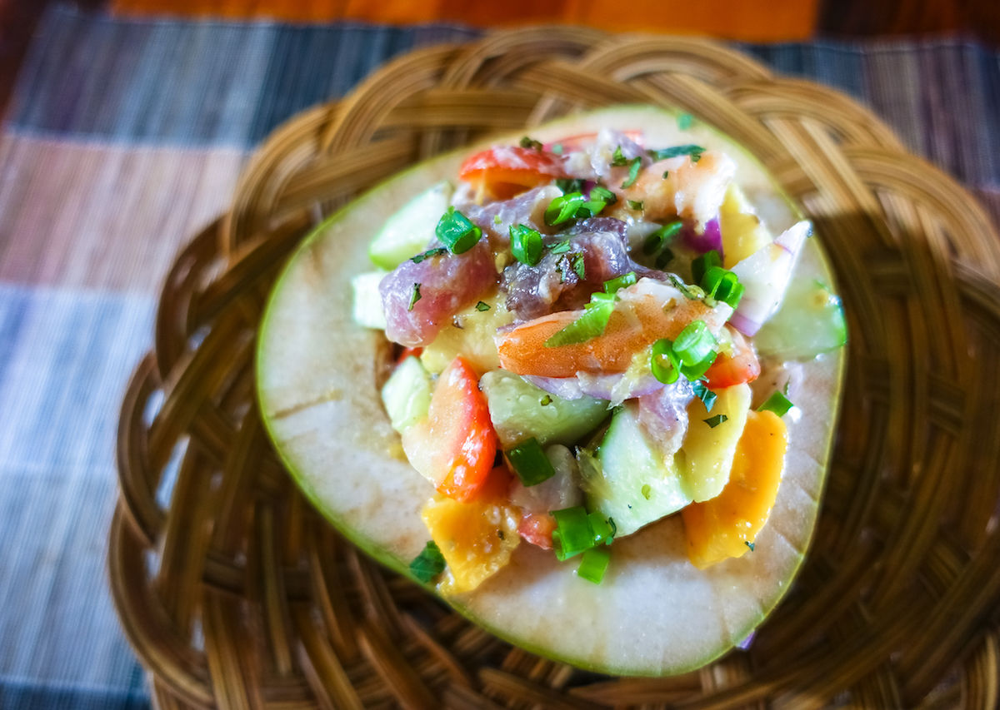

Food is the basic neccessities in our life, it sustains our daily lives for us to be strong and healthy. Food constains nutrients which is substanial essential for the growth, repair and maintenance of body tissues and for regulation of vital processess. Nutrients provides the energy of our bodies need to function. The energy in food is measurred in units called calories
AmazingUlam.com is all about favorite Filipino dishes that most of us love to eat and we summarize the top ten dishes most Pilipinos love to eat and often served on the dining table.